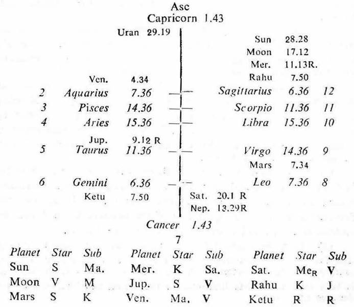

Male: Birth 12-1-1918, Saturday; 7-40-0 A.M. I.S.T.; 23°N2′, 72°E 35′; Ayanamasa 22° 37′.

1. Sun, Moon and Venus denote vision; while Mercury governs the nervous system.
2. Consider the houses 2 (vision, right eye), 12 (left eye: defect), 6 (disease) and 8 (danger).
3. 12th cusp. If the sub lord of the 12th cusp be the significator of 6, 8 or 12, then only during the joint period of the significators of 2 and 12 the eye sight becomes defective.
4. If Sun, Moon or Venus be:
(a) the sub lord of the 12th cusp and
(b) the significator of 2 or 12
there is a greater possibility of defective vision.
5. Eye sight may be lost during the periods of Sun, Moon or Venus if:
(a) Sun, Moon or Venus be the significator of 2 or 12, and
(b) its sub lord is the occupant or owner of 12, and
(c) its sub lord is connected with Sun, Moon or Venus.
6. Eye sight may be lost during the periods of a planet A if:
(a) its star lord be Sun, Moon or Venus, and
(b) its sub lord is the occupant or owner of 12, and
(c) its sub lord is connected with Sun, Moon or Venus.
12th Cusp. The sub lord of the 12th cusp is Rahu. Its star lord Ketu is in 6, it being aspected represents Sun, Moon and Mercury which are in 12. So Rahu is the significator of 6 and 12.
All planets except Venus are the significators of 2 or 12. So select the significators which are in the sub of the occupant or owner of 2 or 12. Thus Moon (in its own sub in 12), Mercury (in the sub Saturn owning 2), Rahu (in the sub Jupiter owning 12) and Ketu (in the sub Rahu in 12) may be considered as the final significators of 2 and 12.
1. As the cuspal sub lord of 12 (Rahu) is the significator of 6 and 12, the joint period of the significators of 2 and 12 (Moon, Rahu, Mercury and Ketu) will cause defect in eye sight or vision.
2. The native was born during the period of Venus with 14Y 2M 12D in balance.
During the period of Moon (24-3-1938 to 24-3-1948), in the sub periods of Rahu (24-8-1939 to 24-2-1941), Mercury (24-1-1944 to 24-6-1945) and Ketu (24-6-1945 to 24-1-1946) his eye sight was gradually getting weaker.
The period ruler Moon is the cuspal sub lord of 11 (cure) and it is also the significator of 1 and 5 (being in the star Venus in 1 and owning 5). This denotes remedial measures and hence his eye sight did not become worse during the period of Moon.
3 (a) During the period of Rahu (24-3-1955 to 24-3-1973), in the sub periods of Rahu (24-3-1955 to 6-12-1957), Mercury (6-3-1963 to 27-9-1965), Ketu (24-9-1965 to 12-10-1966) and Moon (6-9-1970 to 6-3-1972) he was gradually losing his vision.
(b) The period ruler Rahu is the cuspal sub lord of 12 and it is the significator of 6 and 12. This denotes disease and defect in vision and hence this is a very bad period for eyesight.
(c) Moon is the significator of 12, its star lord is Venus, its sublord is the occupant of 12 and connected with Moon. So the sub period of Moon will prove dangerous for vision.
Hence during the joint period of Rahu and Moon he lost vision in the year 1971, due to detachment of Retina.
(d) 11th Cusp (cure). Moon is the cuspal sublord of 11 and it is the significator of 1 and 5. So it denotes remedial measures for improving the Retinal detachment. Hence in this very sub period of Moon he will get treatment for regaining vision. Moon is in its own Sub and it is aspected by Mars (operation) owning 11 (remedy) and occupying 8 (surgery). So his eyes will be operated and he will get vision.
(e) The period ruler Rahu is in the sub Jupiter which owns 12 and aspects Mars. Hence Rahu indicates hospitalisation and surgical operation for curing eyesight. His eyes were operated thrice during the joint period of Rahu and Moon on 28-1-1971, 4-8-1971 and 2-2-1972. He regained a slight vision in one eye, the other eye is without vision because of the Cataract.
4 (a) 8th Cusp (danger). The sublord of the 8th cusp is Jupiter. It owns 12, it is in the Star Sun owing 8 and occupying 12, it is in the Sub Venus owing 5 and occupying 1. So it is the significator of 8, 12 and connected with 1 and 5. Hence Jupiter shows danger, defect and cure. Further its starlord Sun is aspected by Mars owning 11 and occupying 8; while its sublord Venus is in the Star Mars. So Jupiter also denotes operation and cure.
(b) In view of this he will lose eyesight during the joint period of Rahu, Moon and Jupiter (13-2-1971 to 25-4-1971). He lost vision on 10-4-1971 when Sun was transitting in Pisces 26° 8′ in the Sub Jupiter (the inter period ruler); Moon in Virgo 17° 0′ in its own Star (the sub period ruler); Rahu in Capricorn 27° 22′ in the Sub Jupiter.
5. His eye was operated during the joint period of Rahu, Moon and Saturn on 28-4-1971. Saturn owns 2 (vision), it is in the Star Mercury (nerves i.e. Retina) owning 6 (disease) and occupying 12 (hospitalisation), it is in the Sub Venus owning 5 and occupying 1 (cure), So Saturn is the significator of 6, 12 and connected with 2; 1 and 5. Further its starlord Mercury is aspected by Mars and its sublord Venus is in the Star Mars. Hence Saturn shows Retinal operation for cure.
On 28-4-1971 Sun was transitting in Aries (eyes), the sign of Mars (operation), in the Star of Venus (vision); Moon in Taurus 23° in the Star of Moon (the sub period ruler); Saturn in Taurus 0° 5′ in the Sub Rahu (the period ruler).